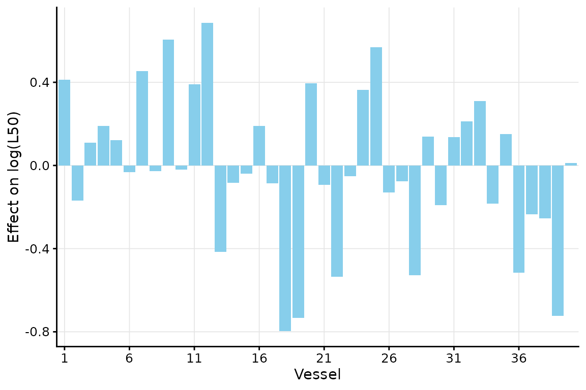
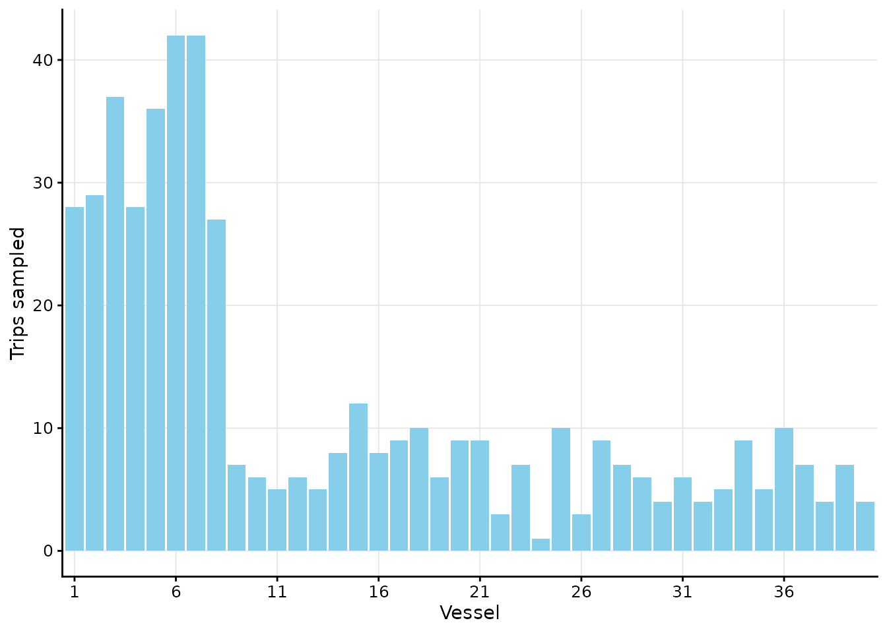
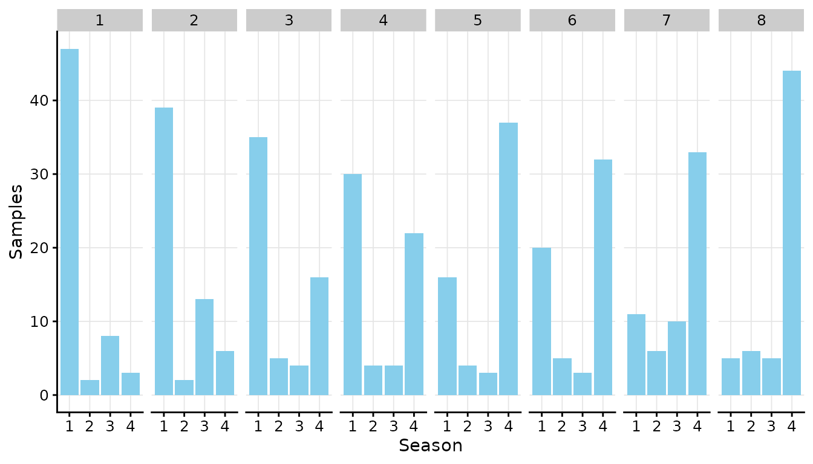
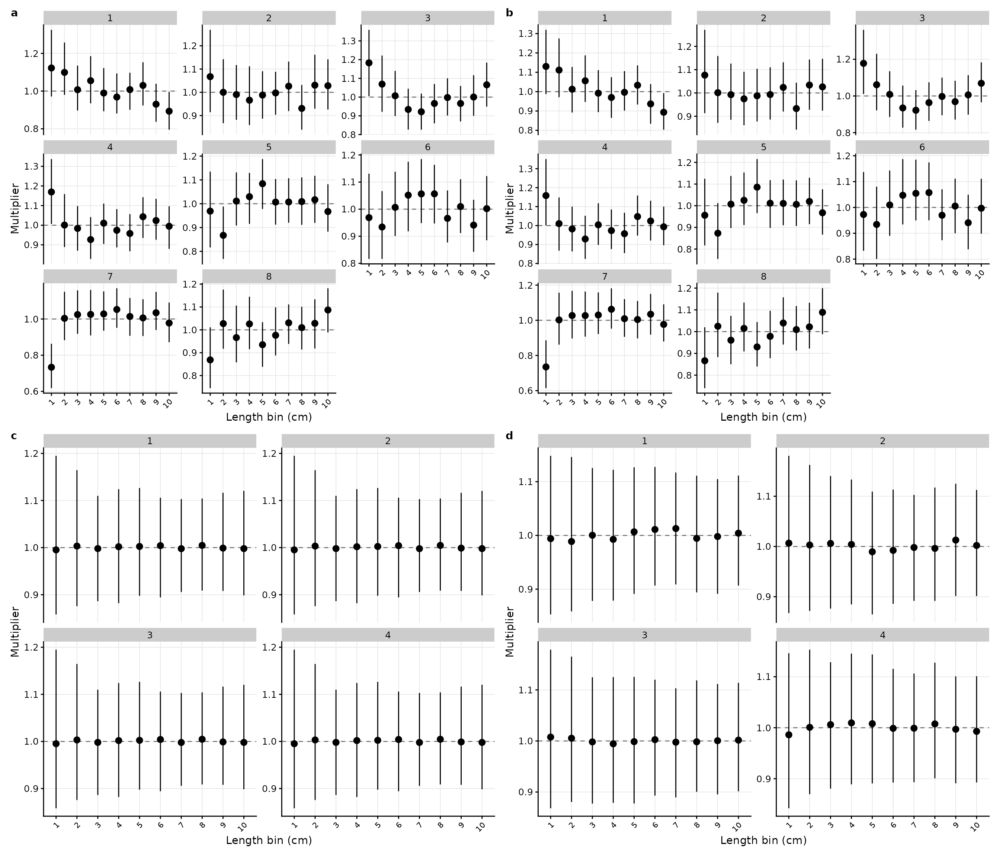
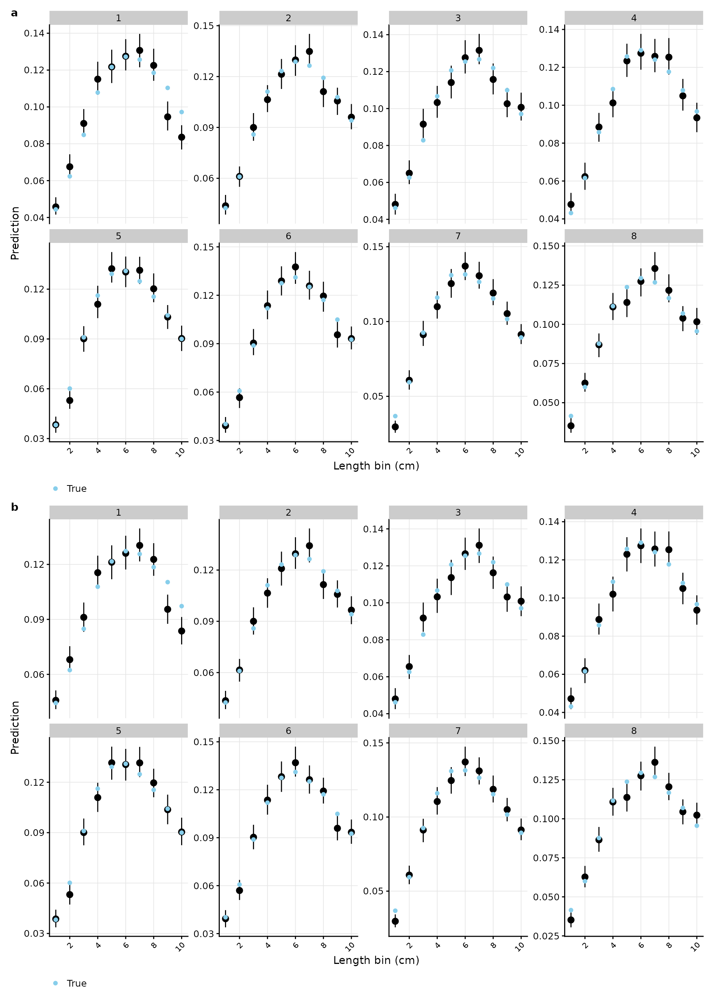
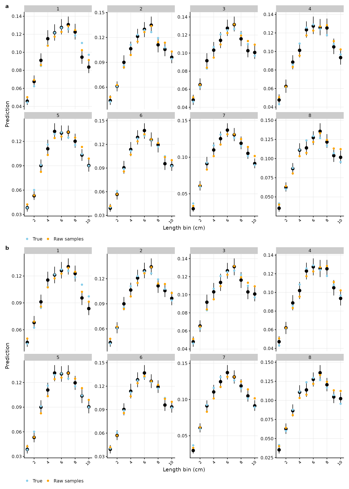
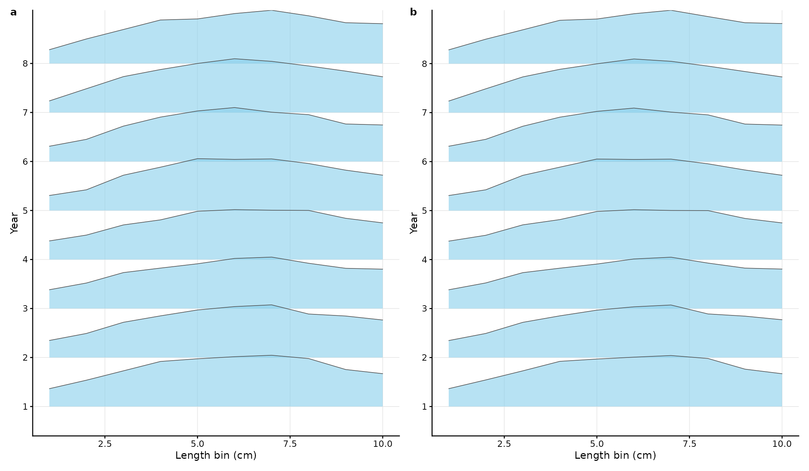
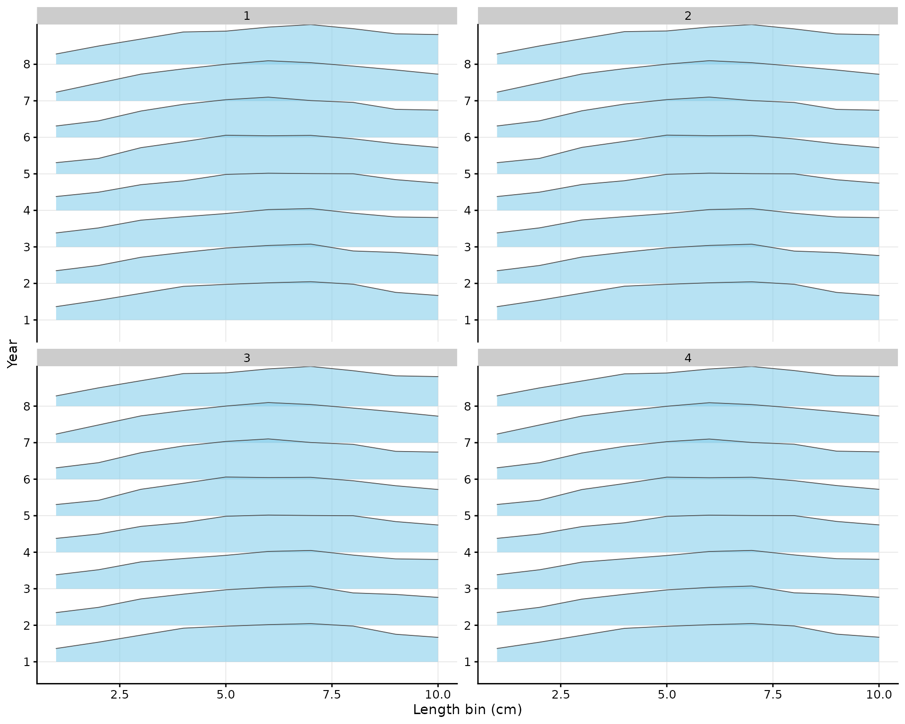
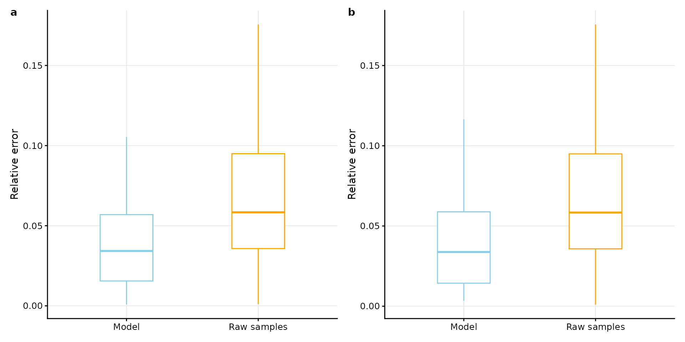

Correcting for vessel-level sampling bias in compositional data
Source:vignettes/vessel_bias_simulation.Rmd
vessel_bias_simulation.RmdObserver programmes rarely sample all vessels equally. Some vessels are sampled in every season, others only sporadically, and the mix of observed vessels changes from year to year. Because vessels differ in the size-composition of their catch — through gear configuration, skipper behaviour, or preferred fishing grounds — the raw observer sample can be a poor representation of the fleet-wide catch composition.
This vignette demonstrates how ComPoM can correct for
vessel-level sampling bias using a Poisson-multinomial model fitted with
either a Bayesian backend (brms) or a frequentist
random-effects backend (sdmTMB without a mesh). Neither
model uses spatial information; instead, both treat vessel identity and
season as crossed random effects interacting with the composition
bins.
The simulation generates a fleet of vessels with vessel-specific selectivity offsets and year/season effects, then samples that fleet unevenly — a small subset of vessels is heavily over-represented, and their seasonal coverage shifts across years. We compare three approaches for estimating fleet-wide catch compositions:
- Raw scaled samples — naively treating observer data as representative
- sdmTMB (non-spatial) — maximum-likelihood Poisson-multinomial with random effects
- brms (Bayesian) — fully Bayesian Poisson-multinomial with the same random-effect structure
Setup
library(tidyverse)
library(ComPoM)
library(sdmTMB)
source("vignette_helpers.R")
clo <- function(x) x / sum(x)
# Simulation parameters
n_bins <- 10
n_vessels <- 40
n_seasons <- 4
n_years <- 8
n_samps_per_year <- 60
n_per_samp <- 100
# Population and selectivity
M <- 0.2
surv <- exp(-(1:n_bins) * M)
popfreq <- clo(surv)
L50_base <- 6.5
L95 <- 0.75Simulate Fleet
Each vessel has a persistent selectivity offset drawn from a normal distribution — some vessels catch larger fish, others smaller.
Figure 1 shows the simulated vessel offsets.
set.seed(42)
vessels <- tibble(
vessel_id = factor(1:n_vessels),
vessel_effect = rnorm(n_vessels, 0, 0.3)
)
ggplot(vessels, aes(x = vessel_id, y = vessel_effect)) +
geom_col(fill = "skyblue") +
scale_x_discrete(breaks = function(x) x[seq(1, length(x), by = 5)]) +
labs(x = "Vessel", y = "Effect on log(L50)")
Figure 1. Simulated vessel-specific offsets of log(L50).
Simulate Temporal and Seasonal Effects
year_effects <- cumsum(rnorm(n_years, 0, 0.1))
year_effects <- year_effects - mean(year_effects)
season_effects <- rnorm(n_seasons, 0, 0.2)
season_effects <- season_effects - mean(season_effects)
temporal_df <- expand_grid(
Year = factor(1:n_years),
Season = factor(1:n_seasons)
) |>
mutate(
year_effect = year_effects[as.integer(Year)],
season_effect = season_effects[as.integer(Season)]
)Generate True Catch Compositions
The true fleet-wide composition integrates over all vessels, years, and seasons.
true_catch_by_bin <- expand_grid(
vessel_id = factor(1:n_vessels),
Year = factor(1:n_years),
Season = factor(1:n_seasons),
bin = 1:n_bins
) |>
left_join(vessels, by = "vessel_id") |>
left_join(temporal_df, by = c("Year", "Season")) |>
mutate(
L50 = exp(log(L50_base) + vessel_effect + year_effect + season_effect),
catch = rgamma(n(), 100, 0.01),
tcatch = Selectivity(bin, L50, L95) * popfreq[bin] * catch
)
true_comp_year <- true_catch_by_bin |>
group_by(Year, bin) |>
summarise(tcatch = sum(tcatch), .groups = "drop")Simulate Non-Representative Sampling
Sampling is biased in two ways:
- Vessel bias: a handful of vessels (the top 8) are sampled much more frequently than the rest.
- Seasonal shift: early years oversample season 1; late years oversample season 4. This mimics a programme that changes its coverage over time.
Figure 2 shows the number of trips sampled per vessel.
# Vessel sampling weights — top 8 vessels get 5x the weight
vessel_weights <- rep(1, n_vessels)
vessel_weights[1:8] <- 5
vessel_weights <- vessel_weights / sum(vessel_weights)
# Seasonal weights that shift over time
season_probs_by_year <- function(year, n_years, n_seasons) {
alpha <- (year - 1) / (n_years - 1)
weights <- rep(0.5, n_seasons)
weights[1] <- 4 * (1 - alpha) + 0.5 * alpha
weights[n_seasons] <- 0.5 * (1 - alpha) + 4 * alpha
weights / sum(weights)
}
samples <- tibble(
samp_id = 1:(n_samps_per_year * n_years),
Year = factor(rep(1:n_years, each = n_samps_per_year))
) |>
mutate(
vessel_id = factor(sample(1:n_vessels, n(), replace = TRUE, prob = vessel_weights)),
Season = factor(sapply(as.integer(Year), function(yr) {
sample(1:n_seasons, 1, prob = season_probs_by_year(yr, n_years, n_seasons))
}))
) |>
left_join(vessels, by = "vessel_id") |>
left_join(temporal_df, by = c("Year", "Season")) |>
mutate(
L50 = exp(log(L50_base) + vessel_effect + year_effect + season_effect)
)
# Generate composition samples
long_form_sims <- samples |>
group_by(samp_id) |>
nest() |>
mutate(
comp_samps = lapply(data, function(df) {
which(rmultinom(n_per_samp, 1,
Selectivity(1:n_bins, df$L50, L95) * popfreq) == 1,
arr.ind = TRUE)[, 1]
})
) |>
unnest(c(data, comp_samps)) |>
mutate(count = 1) |>
rename(bin = comp_samps)
# Visualise sampling bias
sampling_summary <- long_form_sims |>
distinct(samp_id, vessel_id, Year, Season) |>
count(vessel_id, name = "n_trips")
ggplot(sampling_summary, aes(x = vessel_id, y = n_trips)) +
geom_col(fill = "skyblue") +
scale_x_discrete(breaks = function(x) x[seq(1, length(x), by = 5)]) +
labs(x = "Vessel", y = "Trips sampled")
Figure 2. Number of trips sampled per vessel.
Figure 3 shows the number of samples per season in each year.
season_summary <- long_form_sims |>
distinct(samp_id, Year, Season) |>
count(Year, Season)
ggplot(season_summary, aes(x = Season, y = n)) +
geom_col(fill = "skyblue") +
facet_wrap(~Year, nrow = 1) +
labs(x = "Season", y = "Samples")
Figure 3. Number of samples per season in each year.
Fit Non-Spatial sdmTMB Model
mod_tmb <- fit_model(
re_form = "Season + vessel_id",
ffx_form = "Year",
data = input_data,
backend = "TMB",
iter = 1000,
warmup = 500,
thin = 2
)Fit Bayesian Model with brms
mod_brms <- fit_model(
re_form = "Season + vessel_id",
ffx_form = "Year",
data = input_data,
backend = "brms",
dist=poisson(),
brms_backend = "rstan",
chains = 4,
cores = 4,
iter = 1000,
warmup = 500,
thin = 2
)
#> Running /opt/R/4.6.2/lib/R/bin/R CMD SHLIB foo.c
#> using C compiler: ‘gcc (Ubuntu 15.2.0-16ubuntu1) 15.2.0’
#> gcc -I"/opt/R/4.6.2/lib/R/include" -DNDEBUG -I"/home/runner/work/_temp/Library/Rcpp/include/" -I"/home/runner/work/_temp/Library/RcppEigen/include/" -I"/home/runner/work/_temp/Library/RcppEigen/include/unsupported" -I"/home/runner/work/_temp/Library/BH/include" -I"/home/runner/work/_temp/Library/StanHeaders/include/src/" -I"/home/runner/work/_temp/Library/StanHeaders/include/" -I"/home/runner/work/_temp/Library/RcppParallel/include/" -DRCPP_PARALLEL_USE_TBB=1 -DTBB_INTERFACE_NEW -I/home/runner/work/_temp/Library/RcppParallel/include -I"/home/runner/work/_temp/Library/rstan/include" -DEIGEN_NO_DEBUG -DBOOST_DISABLE_ASSERTS -DBOOST_PENDING_INTEGER_LOG2_HPP -DSTAN_THREADS -DUSE_STANC3 -DSTRICT_R_HEADERS -DBOOST_PHOENIX_NO_VARIADIC_EXPRESSION -D_HAS_AUTO_PTR_ETC=0 -include '/home/runner/work/_temp/Library/StanHeaders/include/stan/math/prim/fun/Eigen.hpp' -D_REENTRANT -DRCPP_PARALLEL_USE_TBB=1 -I/usr/local/include -fpic -g -O2 -c foo.c -o foo.o
#> In file included from <command-line>:
#> /home/runner/work/_temp/Library/StanHeaders/include/stan/math/prim/fun/Eigen.hpp:3:10: fatal error: stdexcept: No such file or directory
#> 3 | #include <stdexcept>
#> | ^~~~~~~~~~~
#> compilation terminated.
#> make: *** [/opt/R/4.6.2/lib/R/etc/Makeconf:190: foo.o] Error 1Effects Plots
Figure 4 shows the year and season effects from both models.
(Fx_plot(mod_tmb, grp = "Year", grid = NULL) |
Fx_plot(mod_brms, grp = "Year", grid = NULL)) /
(Fx_plot(mod_tmb, grp = "Season", grid = NULL) |
Fx_plot(mod_brms, grp = "Season", grid = NULL)) +
plot_annotation(tag_levels = "a")
Figure 4. Year effects (a, b) and season effects (c, d) on the composition, as multipliers relative to the geometric mean across bins, from the sdmTMB model (a, c) and the brms model (b, d). Points are medians and bars 95% intervals.
Scale Compositions to Catch
Predictions from each model were scaled to the true catch by year,
season and vessel (catch weighting,
remove_nuisance = FALSE) and then aggregated to annual
compositions. Catch weighting evaluates the nuisance random effects
(season and vessel) at the level of each stratum, so both variables must
be in grps. The result estimates the composition of the
total catch of the fleet.
# Scaling data: total catch by year, season and vessel (full fleet)
scale_df <- true_catch_by_bin |>
group_by(Year, Season, vessel_id) |>
summarise(catch = sum(tcatch), .groups = "drop")
scaled_tmb <- scale_comps(
scale_df,
predvar = "catch",
fit = mod_tmb,
grps = c("Year", "Season", "vessel_id")
)
scaled_brms <- scale_comps(
scale_df,
predvar = "catch",
fit = mod_brms,
grps = c("Year", "Season", "vessel_id")
)
# Aggregate to annual
scaled_tmb_yr <- scaled_tmb |>
group_by(Year, bin, .draw) |>
summarise(tot_by_bin = sum(tot_by_bin), .groups = "drop")
scaled_brms_yr <- scaled_brms |>
group_by(Year, bin, .draw) |>
summarise(tot_by_bin = sum(tot_by_bin), .groups = "drop")Compare Scaled Compositions to Truth
Figure 5 shows the scaled annual compositions against the true composition.
p_truth_tmb <- scaled_comp_plot(
scaled_comp = scaled_tmb_yr,
grps = "Year",
scaled = TRUE,
scales = "free_y",
comp_are = true_comp_year,
cvar = "tcatch",
comp_label = "True"
)
p_truth_brms <- scaled_comp_plot(
scaled_comp = scaled_brms_yr,
grps = "Year",
scaled = TRUE,
scales = "free_y",
comp_are = true_comp_year,
cvar = "tcatch",
comp_label = "True"
)
p_truth_tmb / p_truth_brms + plot_annotation(tag_levels = "a")
Figure 5. Annual compositions of the catch from the sdmTMB model (a) and the brms model (b). Black points and bars are medians and 95% intervals, and skyblue points the true composition.
Evaluate Against Raw Samples
raw_comp <- input_data |>
group_by(Year, bin) |>
summarise(tcatch = sum(tot_by_bin), .groups = "drop")Figure 6 shows the scaled compositions together with the true and raw sample compositions.
p_raw_tmb <- scaled_comp_plot(
scaled_comp = scaled_tmb_yr,
grps = "Year",
scaled = TRUE,
scales = "free_y",
comp_are = true_comp_year,
comp_are2 = raw_comp,
cvar = "tcatch",
comp_label = "True",
comp2_label = "Raw samples"
)
p_raw_brms <- scaled_comp_plot(
scaled_comp = scaled_brms_yr,
grps = "Year",
scaled = TRUE,
scales = "free_y",
comp_are = true_comp_year,
comp_are2 = raw_comp,
cvar = "tcatch",
comp_label = "True",
comp2_label = "Raw samples"
)
p_raw_tmb / p_raw_brms + plot_annotation(tag_levels = "a")
Figure 6. Annual compositions from the sdmTMB model (a) and the brms model (b), with the true composition (skyblue) and the raw sample composition (orange). Black points and bars are medians and 95% intervals.
Ridgeline Plots of Scaled Compositions
Ridgeline plots show the modelled size composition by year.
scaled_ridge_plot() takes the output of
scale_comps() directly; plot_y sets the
variable stacked on the y-axis and plot_facet optionally
splits the display across a second variable (here, not needed as we are
already aggregated to annual).
Figure 7 shows the annual compositions as ridgelines.
library(ggridges)
p_ridge_tmb <- scaled_ridge_plot(
scaled_comp = scaled_tmb_yr,
grps = "Year",
plot_y = "Year"
)
p_ridge_brms <- scaled_ridge_plot(
scaled_comp = scaled_brms_yr,
grps = "Year",
plot_y = "Year"
)
(p_ridge_tmb | p_ridge_brms) + plot_annotation(tag_levels = "a")
Figure 7. Annual size compositions (ridgelines) from the sdmTMB model (a) and the brms model (b).
If you have a second grouping variable (e.g. season within year) you
can pass it to plot_facet to produce a faceted ridgeline
display:
Figure 8 shows the sdmTMB compositions by season.
# Re-aggregate retaining Season
scaled_tmb_yr_season <- scaled_tmb |>
dplyr::group_by(Year, Season, bin, .draw) |>
dplyr::summarise(tot_by_bin = sum(tot_by_bin), .groups = "drop")
scaled_ridge_plot(
scaled_comp = scaled_tmb_yr_season,
grps = c("Year", "Season"),
plot_y = "Year",
plot_facet = "Season"
)
Figure 8. Annual size compositions (ridgelines) from the sdmTMB model by season.
Relative Error Comparison
Figure 9 shows the relative error of the models and of the raw samples.
p_err_tmb <- scaled_comp_comp(
scaled_comp = scaled_tmb_yr,
grps = "Year",
scaled = TRUE,
comp_are = true_comp_year,
comp_are2 = raw_comp,
cvar = "tcatch"
)
p_err_brms <- scaled_comp_comp(
scaled_comp = scaled_brms_yr,
grps = "Year",
scaled = TRUE,
comp_are = true_comp_year,
comp_are2 = raw_comp,
cvar = "tcatch"
)
(p_err_tmb | p_err_brms) + plot_annotation(tag_levels = "a")
Figure 9. Relative error of the annual proportions from the sdmTMB model (a) and the brms model (b), compared with the relative error of the raw samples, against the true composition.
Both the Bayesian and the frequentist model recovered the true fleet-wide compositions with lower relative error than the raw samples. The median relative error was about 0.035 for both models and 0.058 for the raw samples.